Original idea by SimRacerSteve on Discord.
The company-driver roleplay this app automates is his — the hours-of-service discipline, the dispatcher who owns their own bad calls, and the rule that company freight revenue is never the driver's paycheck.
Every screen here is a real capture from a running career — R. Calloway, a probationary reefer driver at Prime Inc. The numbers are his, not mock-ups.
This book tells you what to do. The Operations Manual that ships beside it tells you why — every threshold, every mechanism, and the failure each rule was built to prevent. You do not need it to play, and nothing here depends on having read it.
It is numbered against this one: a page there headed From Section 13 belongs behind Section 13 here.
American Truck Simulator gives you a truck and a job board. This gives you an employer — one with standards, a safety department, a maintenance schedule and an accountant.
You are a company driver. The app is operations: it takes your position and your hours, looks at the freight you can see in game, and tells you which load you are running and why. Then it audits the trip, decides whose fault any failure was, updates your safety record and pays you.
Nothing is automatic. The app cannot see your game, so you report what it shows and the app does the arithmetic, the record-keeping and the judgement. Everything it knows, you told it.
These come from the roleplay this app was built to automate, and they are enforced in code rather than left to good intentions.
Every load is simulated against your hours before it is offered. The app will not accept a load and then discover it does not fit — that is the single most common way a dispatch roleplay falls apart, and it is designed out.
A safety buffer is required between projected arrival and the deadline, plus a parking allowance at the end of a shift. Two hours by default, and you can raise it.
The app never invents clock values. It projects forward from what you report, and it keeps the break clock and available drive time strictly separate — they are different numbers and confusing them is how drivers run illegal.
If a load was booked with too little slack and it runs late, the audit records it as dispatcher fault. It does not touch your safety record and it cannot trigger discipline. The company owns freight it should never have accepted.
Freight revenue belongs to the company. Your wages are a separate, per-mile calculation that settles on the Payroll tab. The two never mix.
No revenue from imaginary drivers, no damage on equipment your game has never heard of, and if the accounts drift the app asks you to reconcile rather than quietly writing a new balance.
Double-click TruckSimDispatcher.exe. A console window opens and your browser opens
with it. Leave the console open while you play; Ctrl+C shuts it down.
It is a web app that only ever listens on 127.0.0.1 — your own machine. Nothing is
served to the network and nothing leaves the computer.
| Situation | What happens |
|---|---|
| SmartScreen warns you | The exe is unsigned. More info → Run anyway. |
| Policy blocks the exe | Some managed machines refuse unsigned executables. You can run it from source instead — see Section 23. |
| You want a specific port | --port 5199 |
| You do not want a browser opened | --no-browser |
The app creates a data folder beside the exe holding career.json plus
rotating backups. Copy that folder to another machine and the career goes with it — that is the
whole portability story.
If the folder beside the exe is not writable — dropped into Program Files, a read-only share — it
falls back to %LOCALAPPDATA%\TruckSimDispatcher\data. The console prints which file it
opened every time it starts, so you are never guessing.
Writes are atomic: the app writes a temp file and swaps it in, so a crash mid-save cannot leave you with half a career. A timestamped backup is rotated before each write, and up to forty are kept. If the file is ever unreadable it is quarantined rather than discarded.
If you set an API key so the app can read your screenshots, it is stored in
career.json in plain text. Do not post the file publicly or commit it to a repository.
Replace the exe in the folder you are already using and leave data alone. Newer builds
migrate older career files forward as they load — migrations only ever add what is missing, and they
never rewrite history. Section 23 covers what to do if you move the exe somewhere new.
First run puts an application in front of you. It is not a formality: what you put on it decides which carriers will take you, what you get paid, how long your probation runs, which truck you are handed and how often you go home.
| Field | What it changes |
|---|---|
| Experience (years) | Under 1 year is a greenhorn: lower starting rate, longer probation, hazmat restricted. Five years or more shortens probation and starts you above the floor. It also carries for the whole career — years accrue from days served, so what you declare here is a real head start. |
| Preferred division | Which carriers are a fit, and which freight scores higher on the board. |
| Endorsements | Hazmat opens placarded freight most drivers cannot touch, and some carriers require it. There is no tanker or doubles endorsement — see section 22. |
| Transmission | You get a unit with the gearbox you asked for. |
| Freight you will not haul | Respected. The app will not force it on you. |
| How often you want to be home | A real commitment the dispatcher routes for. See Section 13. |
Weekly means shorter regional runs and smaller cheques. Six weeks means the most miles and the most money. The dispatcher will steer freight to get you back on the schedule you picked, so picking "home every week" and then wanting long hauls will fight itself.
Submit the application and you get a market of carriers — real US fleets, with their actual headquarters and the freight they genuinely run. Schneider out of Green Bay, Prime out of Springfield, Melton out of Tulsa, Groendyke out of Enid, and a dozen more.
Each shows its pay, equipment and home-time ratings, the divisions it runs, its yards, and the bar it holds applicants to. You apply to the one you want.
A specialised carrier will not hire a greenhorn, and a carrier having a bad quarter may not be hiring at all — business conditions shift and are visible on the card. Rejection is not the end of it: build experience with a general carrier and apply again. The app credits your declared experience plus everything you have done since, so the gap closes as you work.
Pay and standards shown for these carriers are roleplay values chosen to make the progression interesting. They are not real employment terms and should not be read as such.
The moment you are hired the app gives you a numbered setup checklist. It exists because the app cannot buy anything in your game — you have to make the game match the company.
You start with one small garage and one truck. That is what a fresh ATS profile can afford, and it is deliberate.
If you have seeded cash with a save editor, buy the large garage instead, set the yard to Large on the Terminals tab, and use Fleet → Stock a yard to put a five-truck fleet in it in one step. Yard tier sets capacity exactly as the ATS garage upgrades do: Small 1, Medium 3, Large 5.
A save editor can seed cash if you want to start bigger. Money lives in
Documents\American Truck Simulator\profiles\<profile>\save\<slot>\game.sii,
which is encrypted — SII_Decrypt opens it and TS SE Tool is a purpose-built editor. Mods can also
unlock all dealerships and recruiting agencies, which ATS otherwise hides until you drive past them.
Editors can corrupt a save, TS SE Tool is explicitly alpha software, and SCS cannot support a modified save because they cannot tell what was changed.
And note the trap in Section 14: editing cities to be visible does not make them discovered. They appear on the map and never generate a single job.
Every load follows the same nine steps. Two tabs do almost all of it: Dispatch to get a load, Active Load to run and close it.
The dashed blue return is the part worth noticing. Closing a load already tells the company where you are and what condition the truck is in, so the next dispatch inherits all of it. You confirm it with one button instead of typing six fields again.
Dispatch — report status and clocks, enter the board, get a load. Home time and newly discovered cities show here too.
Active Load — the load in flight: trip log, fuel stops, close-out and the audit.
Trips — every trip on file. Click a row for the full record.
Fleet — tractors and trailers by garage. Add units, stock a yard, mark what your game actually owns.
Terminals — your yards, their tier and services. Open new ones, request a transfer.
Finances — ledger, cash position, break-even cost model and calibration.
Payroll — settlements: what you are owed and what has been paid.
Maintenance — thresholds, work orders, PM schedule.
Safety — incidents, fault attribution and the discipline ladder.
Career — rank, probation, pay, home-time arrangement, employment history.
Packet — the whole career as text, to paste into a chat. Section 22.
Settings — HOS rules, economics, mods, backups, data.
Operations plans off these numbers, so they have to be current. Read them off ATS and type what it says.
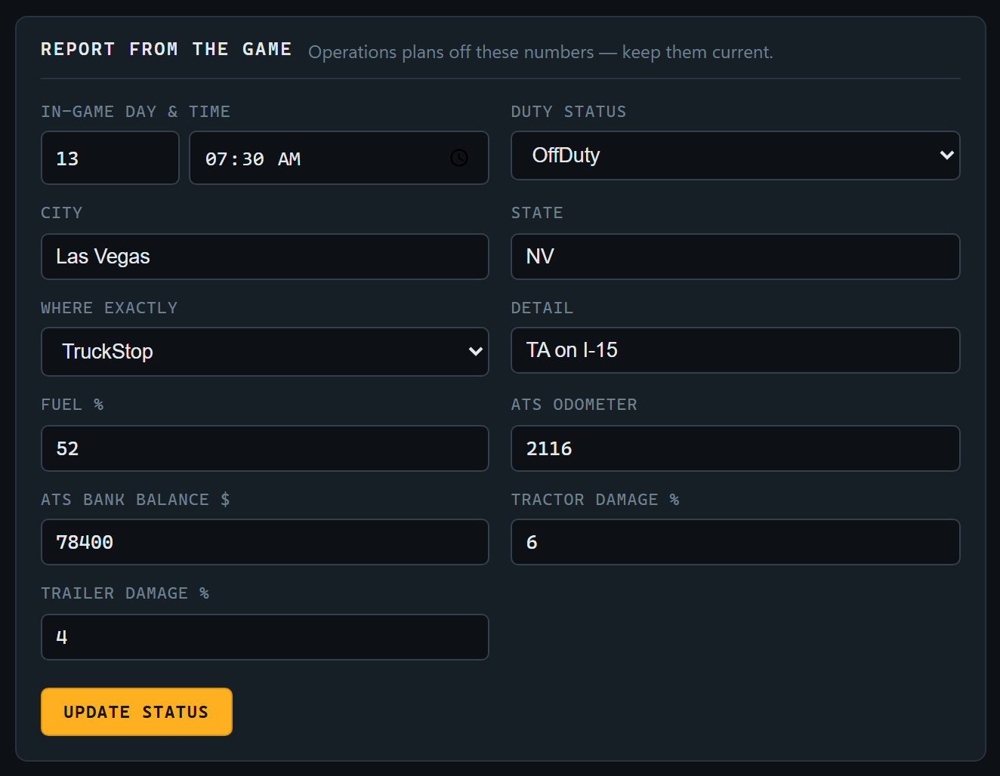
| Field | Where to read it |
|---|---|
| In-game day & time | Your ATS clock. See the note below on day numbers. |
| Duty status | What you are actually doing: off duty, sleeper, on duty, driving. |
| City / state / where exactly | Where the truck is standing. "Where exactly" matters — reporting Terminal at your home yard is what logs home time as taken. |
| Fuel % | The gauge. Used for range planning and fuel-stop counts. |
| ATS odometer | The truck's odometer, for mileage auditing against dispatched miles. |
| ATS bank balance | Your in-game money. This is the company's cash — see Section 16. |
| Tractor / trailer damage % | From the truck browser. Only tracked for equipment you flagged as being in your garage. |
ATS has no calendar you can reconcile against — there is no year or month in the game, only elapsed days and a time of day. So everything reads Day 12 · 14:30. You enter a day number and a time, and every deadline, rest and projection is computed from that.
Beside every day box is the weekday it works out to, updating as you type. A day number cannot be checked by eye — Day 41 and Day 14 are equally plausible — but a weekday can, in a second. If it says Tue and ATS is showing you a Friday, fix it before you file: a day entered wrong takes a whole shift's clocks with it.
Closing a load already reported all of this, so the panel comes back pre-filled with a green banner naming the trip it came from, and a Confirm — nothing changed button.
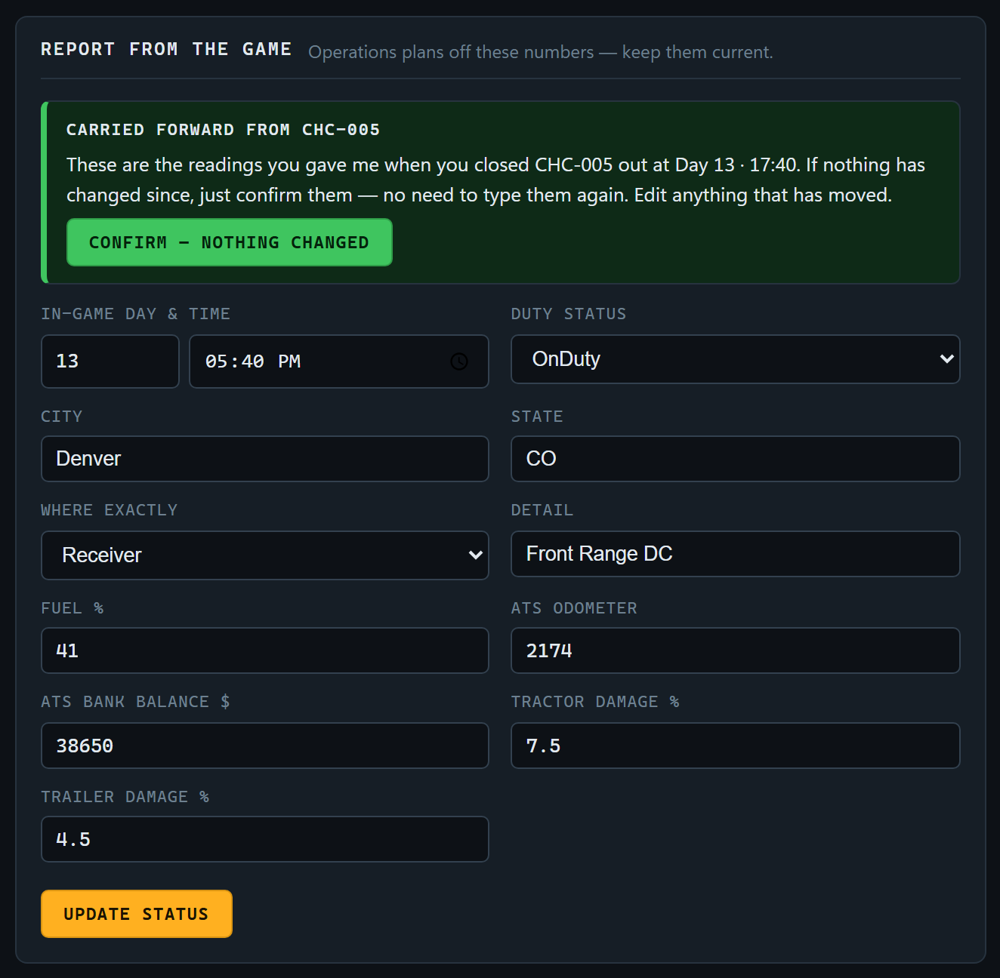
Confirming re-posts what is on screen and clears the banner. If you drove somewhere, sat a rest or bought fuel between closing out and picking up the next load, change those fields first — the button is a shortcut, not a substitute for reporting something that genuinely changed.
Set Where exactly to Terminal while you are in your home city and the app records your home time as taken and resets the clock. Anywhere else — a truck stop across town, a rest area on the edge of the city — does not count. See Section 13.
This is the heart of the app. Four clocks run at once and the smallest one binds. The app simulates them forward across a whole trip, inserting breaks, rests and restarts where the rules demand them, and reports what the load will actually cost you in hours.
This catches people constantly. Sleeping ten hours gives you a fresh 11 and 14 — it does not touch the cycle. Run out of cycle hours and only a 34-hour restart fixes it, which is why the app starts watching for restart-friendly destinations once you drop below 18 hours.
Type the four clocks exactly as your HOS display shows them, in hours and minutes —
8:45, not 8.75. A decimal still works and comes back as h:mm. If you
run an HOS mod its values win — the app projects from your reading, never its own.
Underneath, the app shows what those numbers mean right now: the binding clock, how far you can actually get today at your effective speed, and the next thing the rules will force you to do.
ATS runs on compressed time, which makes a short mandatory break awkward to sit. Turn it off in Settings → HOS and the planner stops inserting breaks and stops tracking the break clock entirely — the field disappears and your 14-hour window becomes the binding stop.
If your display projects hours returning to the cycle, enter them as
8:00 in 1, 10:30 in 2. Decimals work too. Recap is worth understanding — see the next page.
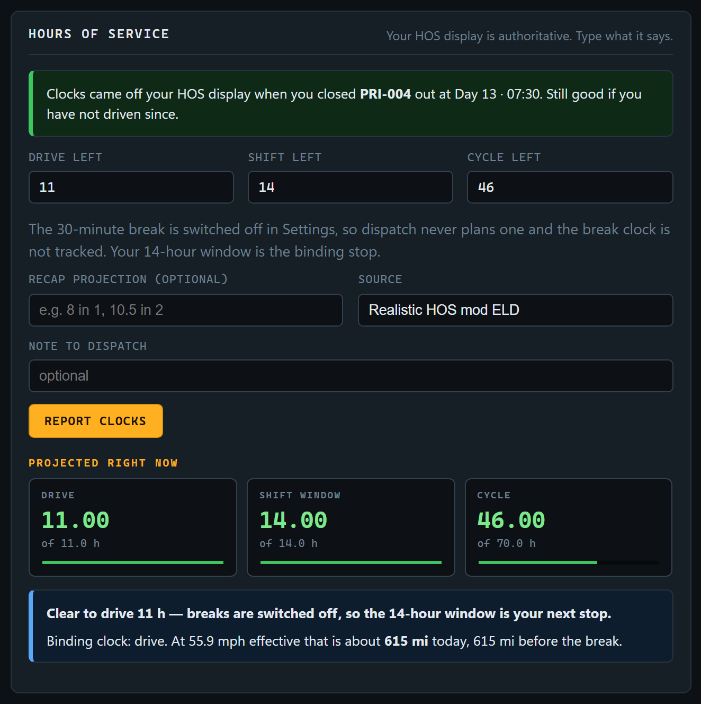
When it evaluates a load it walks the whole trip forward minute by minute: pre-trip, deadhead, loading, driving legs, fuel stops, required breaks, required rests, unloading. It stops when a clock runs out, applies the correct reset, and continues. What comes back is a projected arrival time and the slack against the appointment.
| Setting | Default | What it does |
|---|---|---|
| Safety buffer | 2:00 | Minimum slack between projected arrival and the deadline. Below this a load is Tight. |
| Parking buffer | 0:45 | Time reserved at the end of a shift to find legal parking. |
| Speed factor | 0.86 | Fraction of governed speed actually averaged, allowing for traffic, ramps and terrain. |
| Pre / post trip | 0:15 | On-duty time that eats the 14-hour window without moving the truck. |
| Fuel stop | 0:21 | Time per fuel stop, and how many are needed comes from your range. |
All of them are editable in Settings. If your plans consistently drift by more than three hours the audit will tell you to adjust the speed factor.
If you run GDC Companion alongside the game, you can paste its recap page in once a day and have the clocks and the whole recap projection filled in for you.
Jobs at this location only appears at a shipper or a receiver. There is nothing on offer at a truck stop, a rest area or your own yard — only in the city around them — so the city board is the only option there, and the app stops offering a list that does not exist. Move the truck somewhere freight is not offered and the stage resets itself.
Paste it the same way you paste a job board — Ctrl+V on the Dispatch tab — then press Enter my clocks from this rather than the freight button. The four clocks and the whole recap projection go straight in. There is nothing to type and nothing further to press. It needs an API key (Section 22); without one, type the clocks in as usual and nothing is lost.
That is the screen the reader is built around: the four remaining clocks, the rolling eight-day totals, and the projected recap returns. A screenshot of the game's own HOS display, or of some other tracker, will come back mostly empty rather than half-guessed — and it will tell you what it was actually looking at.
| The trap | What the reader does about it |
|---|---|
| Used versus remaining | The recap page shows both, and the used figures are the big bold ones — "Cycle Used 34:42" sits right next to "left 35:18". The app wants what is left. The reader is told to take the remaining row and to say which panel it read, so you can check it. |
| Day arithmetic | Recap returns are listed against absolute days — Day 17, Day 18. The app wants "in 4 days". It reads today's day off the same screen and does the subtraction itself, five rows at a time, which is five chances for you to slip a day by hand. |
| A projection that is short | It works recap out from the rolling on-duty totals rather than believing the projection table, then checks one against the other and against your cycle. See overleaf. |
| Drive-left looking wrong | Drive left is often smaller than the drive limit minus drive used, because the 14-hour shift is the binding clock. That is correct. It is copied as shown and not "fixed". |
You get a receipt rather than a form: what went in, which panel each clock was read off, and one Undo button. Deciding which of two panels a number came from is the mistake this screen invites, so the app makes that call and shows its working.
The offsets are worked out inside the screenshot's own numbering — boundary day minus the day that screen calls today. It never assumes GDC Companion and this app agree about what day your career is on, because they count from different starting points. If the day header is cropped out of your capture, the rows are shown to you verbatim and left for you to enter, rather than being pinned to the wrong midnights.
The app cannot see your game, so you tell it what freight is on offer. It asks in the order you actually meet it — what is going out from where you are parked, and only then the whole city.
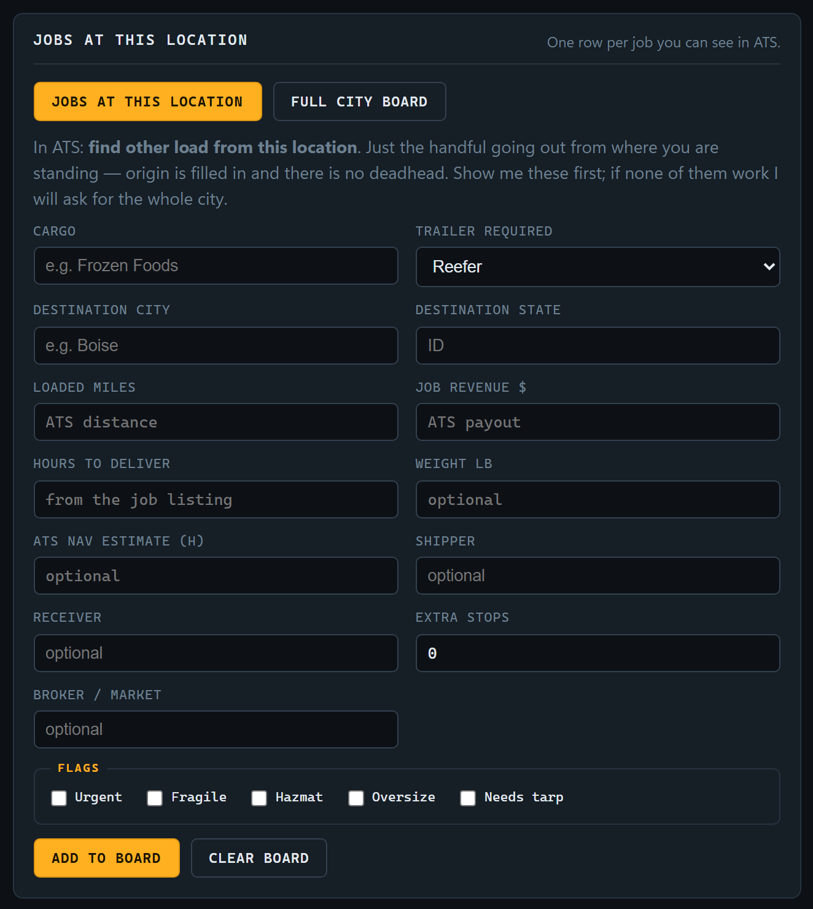
In ATS this is find other load from this location — the handful going out from the dock you just came off. Origin is filled in for you and there is no deadhead field, because there is no deadhead. Usually three or four rows.
Destination, loaded miles, job revenue and hours to deliver. Without all four a load cannot be evaluated, and the app refuses to stage it rather than score it as free freight.
Weight, shipper, receiver, extra stops and the flags all refine the decision, but a load with just the four essentials is perfectly usable. On a dedicated account (Section 20) the shipper stops being optional — it is how the app knows whose freight it is.
If nothing at all can be authorized — out of cycle, equipment stopped, a career that has ended — the board is not offered and the reason is on screen instead. The app already knows; there is no sense in you photographing a freight list, spending tokens reading it, and being told afterwards that none of it was ever going to go.
If nothing at the location is worth running, dispatch says so in those terms — "Nothing worth running out of Las Vegas, NV at this dock" — and asks for the wider board. It will not start talking about repositioning or running empty until the city itself has been looked at, because there is usually far more in a city than at one dock.
If you have set an API key (Section 22), you can paste screenshots of the job board straight in and the app reads the rows out of them. ATS only shows about ten jobs at a time, so paste as many as you need — they are read in small batches behind the scenes and merged, and a job that appears on two screenshots is only added once.
Extracted rows are shown in an editable table for you to confirm, and anything missing a destination, miles, revenue or a delivery window is refused rather than staged with a silent zero. A misread payout would corrupt every rate and feasibility decision downstream, so the confirmation step is not optional.
Only when the dock has nothing. This is the full freight board for the city, including jobs you would deadhead to — so the deadhead field comes back and the origin is yours to set.
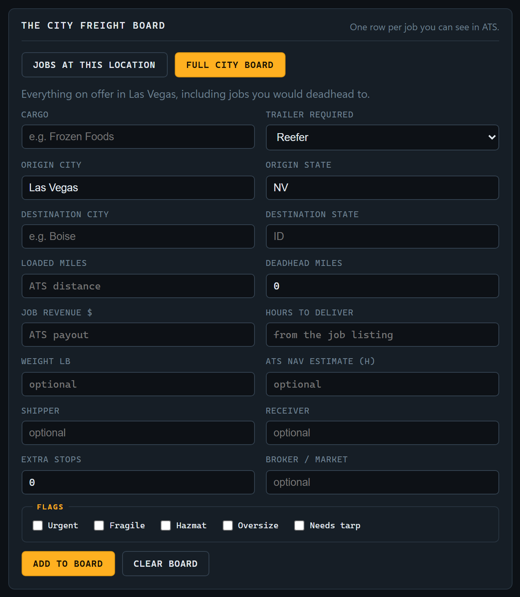
You can switch between the two at any time with the buttons at the top of the panel, and the app resets to jobs at this location after every delivery — a new dock is a new starting point.
Put one city job on the board and dispatch treats the whole thing as the wider board, because it no longer makes sense to say "there might be more in town". That only matters for the wording of a rejection; the scoring is identical either way.
Urgent — noted as a con. No room for error on the clock.
Fragile — warns that damage will show on your record.
Hazmat — a hard gate. Refused outright without the class on your file.
The trailer is not a gate. ATS filters the freight board by whatever is already behind your truck, so any job you can see is one your trailer pulls — the game checked before it drew the list. If the trailer type you typed does not match what is hooked the app says so and takes the load anyway. Fertilizer rides a flatbed, a dry van or a reefer, and no table the app could keep would get every cargo right; the game already has one that does.
Oversize — a hard gate while you are restricted. Probationary drivers cannot run it until Safety signs off.
Needs tarp — adds tarp pay to your settlement.
A job has two clocks and they have nothing to do with each other. Time to deliver is how long the load has once it is yours. Listing expires in is how long the offer stays on the market at all — and a job with eleven hours to deliver and four minutes left on the board is a job you will drive to and not find.
The app could not see the second one, so it never weighed it. Type it into the Listing expires in box on the city board, in h:mm, and three things follow.
| What is left | What happens |
|---|---|
| At this dock | Nothing at all. The box is not even shown. A job offered where you are standing cannot disappear out from under you on the way — there is no way. |
| More than an hour | An ordinary load. The countdown shows on the card and nothing else changes. |
| Half an hour to an hour | Your call. Dispatch says what is left and plans it anyway. Take it, or press Cannot make the pickup — pass and it moves to the next one. Pass as many as you need to. |
| Half an hour or less | Refused as you enter it. It does not go on the board, so it is never a decision you have to make. |
Freight selection is a privilege of rank and stays one — you run the load you are assigned, and that does not change until you clear probation. This is the single exception, and it is narrower than it looks: passing on a listing that is about to evaporate is not choosing your freight, it is declining to chase something that will not be there.
Try it on a load with hours left and you are told exactly that. The button only appears while the listing is short.
The obvious rule would be to compare the time left against how long the pickup is away. The app will not, because it cannot. It knows which city you are in — not where in it, not where on the road to it, and the deadhead figure is your own estimate typed off a listing. Doing that arithmetic would be confident and wrong in both directions: refusing a load you were four minutes from, clearing one you had no chance at.
So it does the part it can do honestly. It tells you what is left and says the road is yours to judge.
It is recorded against the game time you entered it, not frozen at what you typed. Report half an hour gone and a forty-five-minute listing reads fifteen; take your ten and every timed job on that board has gone. A listing you left blank is unknown, and unknown plans exactly as it always did — not every ATS board view prints a countdown, and a blank is not a problem.
Press Evaluate the board and operations picks one load, or rejects the lot. Either way it shows its working.
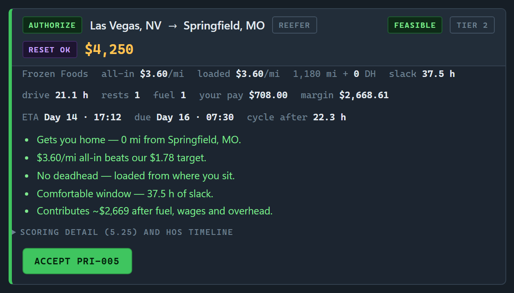
Before anything is scored, a load can be refused outright: missing endorsement, a restriction on your file, freight you will not haul, a trailer you cannot pull, or an infeasible plan. A trailer mismatch is the exception — it produces a swap plan rather than killing the load.
| Factor | What it rewards |
|---|---|
| All-in revenue/mile | Revenue over total miles including deadhead, against your computed break-even and target. |
| Total revenue | A big load is worth something even at a modest rate. |
| Deadhead penalty | Empty miles are pure cost. Over 25% of loaded miles is a hard warning. |
| Positioning | Where it leaves you. Tier 1 reloads easily; tier 3 means deadhead or a cheap escape. |
| Reset positioning | Below 18 cycle hours, ending somewhere you can sit a 34 starts to dominate. |
| HOS slack | Comfortable beats tight, every time. |
| Home time | Silent until close. Then it climbs, and once overdue it nearly doubles. |
| Division / length fit | Freight and run lengths you said you wanted. |
Open Scoring detail on any load and every term is itemised with its contribution, so a decision you disagree with can always be traced to a number. And you can request an alternate with a reason — dispatch decides, but it will answer. Off probation you get more latitude.
You get a number of refusals a week. It grows as you climb, it is spent, and it comes back on Monday.
| Rank | Refusals a week |
|---|---|
| Probationary | 0 |
| Company driver | 1 |
| Senior | 2 |
| Lead | 3 |
| Specialist | 5 |
| Master | 8 |
Operations ranks the board and the top one is the assignment. Taking the third load means turning down the two above it, so it costs two. Turn down as many as you like in one sitting if you can afford it — and then live with what that leaves you on Thursday.
Run out and dispatch's pick stands until Monday. That is not a punishment; it is the end of the latitude your rank carries.
At every rank, including probation. A job that will be off the board before you can reach it is not a preference you are exercising, it is arithmetic — and charging you for declining something you cannot physically get to would be charging you for the app's own sums.
It used to be: probation ran what it was given, and every rank above picked freely. So the first promotion handed over everything at once and no promotion after it changed anything at all. An allowance means every rung is worth something.
ATS shows a delivery window as a range. A dock does not work that way — it books you a slot inside it, and that slot is what the plan aims for.
Where the window gives a range, the app books an appointment a couple of hours into it — on the half hour, never more than four hours past the opening, and clear of the close so the unloading still fits. Dispatch tells you the time when the load is authorised, and the Active tab keeps it in front of you.
And never earlier than the plan can arrive. If the run has you resting overnight at the shipper and rolling in at 06:30, the slot is 06:30 — a dock does not book you in before you can physically be there, and neither will the app. Where even that is past the deadline, no slot is quoted at all and the window closing governs on its own.
Turning up before your slot is sitting on their gate, not slack. Aim for the slot.
Missing the appointment is not instantly a service failure. You get two hours past it, and inside that the close-out says so and the load still counts on time — traffic happens and a receiver with the doors open is not writing you up over ninety minutes.
Past the grace it counts against you even though the window is still open, because the dock was expecting you and you were not there. The window closing is still a hard deadline on top of that. Both are editable in Settings.
It can only ever count against you for a slot the plan actually reached. If dispatch's own projected arrival was later than the appointment, the appointment was never yours to make and it is not held against you.
Measured from when you arrive, not when you leave. Dock time is the receiver's, so a two-hour unload is never two hours of lateness. Log Begin unload when you back in and the close-out takes its delivery time from that.
About one load in eight, the receiver is having a quiet week and will take the freight whenever it turns up, appointment or not. You are told at dispatch, not on the gate — which is the whole point, because hours you know about in advance are hours you can plan a reload around:
"Aurora, CO is quiet this week — they will take it whenever you get there, appointment or not. Do not sit on their gate waiting for a slot; that is about 7:52 you do not have to spend, so a reload is worth looking at."
The board card says it too, as a pro, before you commit to the load. There is no slot to keep and no wait planned into the run.
An early take is the receiver's doing, not a schedule beaten, so it counts as on time and nothing more — there is no special "early" grade inflating your record. The close-out notes what it saved and credits them, so when you read the file back later the early time is not mistaken for your driving.
It does not move the deadline either. The window still closes when it closes.
Once a load is authorized it appears on the Active Load tab with its trip number, the lane, the plan captured at dispatch and the full HOS timeline the planner built.
Begin load, end load, begin unload, end unload, plus fuel, break, rest, scale, delay, breakdown and note. Pick the type, set the game time, and add it.
The four load and unload events are paired on purpose: their timestamps are what loading, unloading and detention are worked out from, so you never hand-calculate time the log already knows. See the next section.
Detail is optional. The event type and time are the record. Leave it blank unless something happened worth reading back later — a delay, a scale, why you stopped where you did.
If the event is a fuel stop, fill in gallons, price per gallon and the city. That fill is then already on the close-out form waiting for you.
This is the whole point: a 900-mile run fuels two or three times at different prices, and reconstructing that from memory at the end is both annoying and inaccurate.
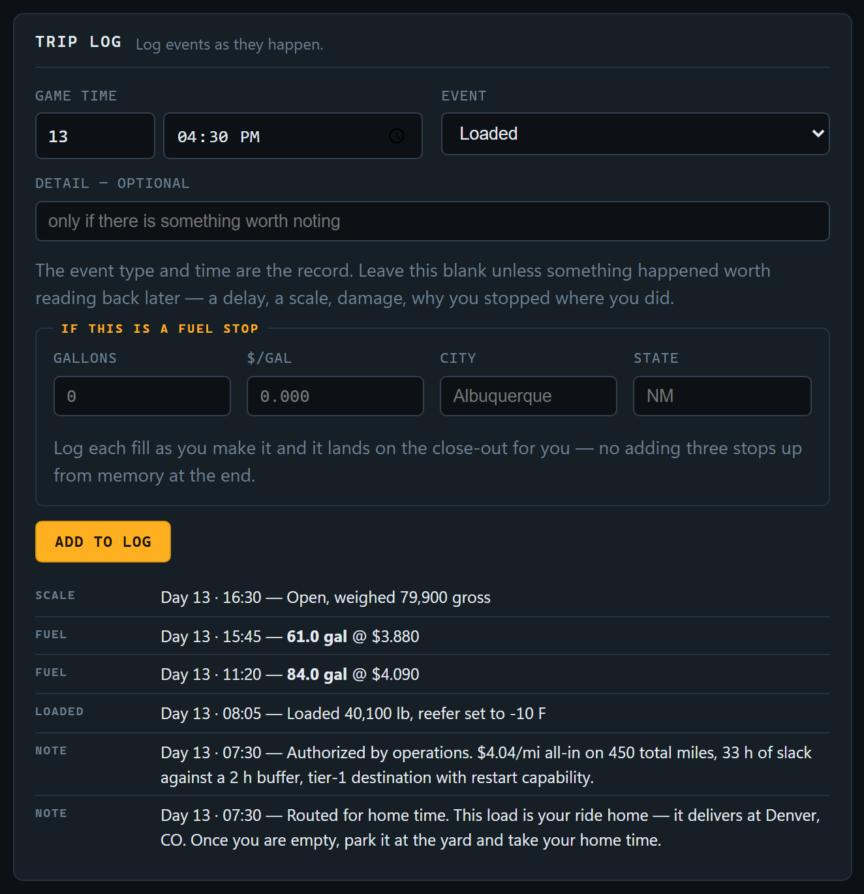
The audit compares your logged times against the plan. If delivery drifted more than three hours from projection the app says so and offers to adjust its speed assumption. A delay logged at the time is also the difference between an unavoidable incident and a driver-fault one.
If a load genuinely cannot be completed, cancel it from this tab with a reason and a fault
attribution. Cancelled loads move to a separate numbering series — CX-001 — so your
freight numbers stay a clean, unbroken sequence. A trip number is never reused.
On a company-caused cancellation you are still paid for the miles you ran, and if there are none you get a day of breakdown pay. A cancellation penalty is charged to the company, not to you.
Every authorized load ends by asking you to report after loading. The loaded time is already captured — it is the timestamp on your End load event. The rest lives in Report after loading on the Active tab, beside the trip log.
| What | Why it is asked for |
|---|---|
| Actual weight | Often not what the board said. Scaled heavy costs fuel and hill time, and the variance goes on the trip record. |
| Trailer damage now | The condition of the trailer you just hooked, which may not be the one you had yesterday. This is the reading the shop rules work from. |
| Odometer | The start of this leg. Close-out measures the miles from it. |
All optional; a blank field leaves what was there rather than zeroing it. Once reported the instruction stops asking. A trailer hooked at or past the 10% line stops dispatch immediately.
A receiver holds you longer than planned. By the time the trailer is empty your 14-hour window is gone and you are standing on their property. This happens constantly, and the rules are not what most people assume.
The window and the drive clock limit driving, not working. On-duty-not-driving has no cap of its own, so finishing the unload after the window expires is perfectly legal.
Moving the truck is not. Not to the exit, not to the truck stop a mile down the road, not just off the property. No exception covers it — adverse weather can buy you two hours, detention cannot buy you any.
So the honest answer is the uncomfortable one: you take your 10 where you stand. The trip card's Parking line says whether this receiver will have you. If they turn you out, put it in the delay notes; that is worth knowing before we book there again.
The app recognises this from the clocks you report and says all of the above. The delay lands on the facility as detention, or on the company if dispatch booked a load that arrived with no window left. Never on you, and never on your safety record.
A load that delivers with almost no window in hand gets flagged before you accept it:
“This delivers with only 0:45 of window left once you are empty. If they hold you 0:45 longer than planned, the window shuts while you are on the property and you are parked there for a 10. Worth asking about overnight parking before you back in.”
Window left when empty in Settings sets that threshold. It is deliberately separate from the safety buffer: that one is about missing an appointment, this one is about being stranded after making it. Different risks, different number.
Delivered? Fill in the close-out and press Deliver & audit. Most of it is already populated, and you report the odometer rather than the miles. A reading that looks wrong is flagged as you type it: a warning, never a block.
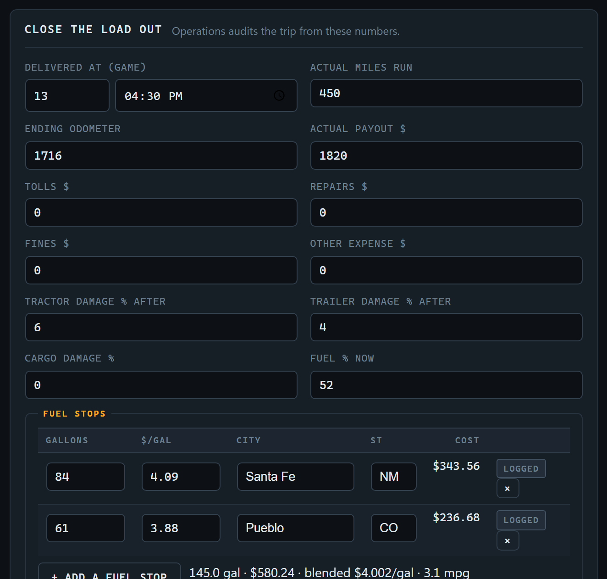
| Field | Notes |
|---|---|
| Arrived at the receiver | When you got there — what decides on-time versus late. Log Begin unload and it fills itself; change it only if you were on the property earlier. |
| Ending odometer | The number ATS shows. Miles run are worked out from it — end minus start, less the deadhead already on the dispatch. |
| Miles run — override | Leave blank and the odometer decides. Fill it in only when the reading was missed or mistyped. |
| Actual payout | What ATS actually paid, which may differ from the board listing. |
| Fuel stops | Add any you did not log. Each row is gallons, price, city. |
| Damage after | Read off the truck browser. A jump of 10 points or more opens an incident. |
Read the odometer when you drop, and again when you pick up. Everything between the two was run empty, and all of it is paid.
Close out at 40,100. Drive ten miles to a truck stop, report your clocks, book a load, drive ten more to the shipper and report 40,120 when you are loaded. That is twenty empty miles and twenty is what you are paid — the reading you took at the truck stop does not reduce it.
It used to. The empty run was measured from whatever the odometer said when the load was booked, so reporting in between the drop and the booking moved the starting line and took half the run with it. Reporting your clocks is the thing this app asks for most often, and the cost of doing it landed on exactly the drivers who did.
Miles you ran before a load was booked are still paid as deadhead, but if you repositioned a hundred miles to a better market that is a leg in its own right, and folding it into the next load's deadhead loses where the truck actually went. You are told when a gap looks like that, and raising an empty move is what keeps the record straight.
This matters most on the run home. An empty leg to the yard with no move raised against it is miles the books never see.
That is a statement about the listing, not about where your truck is. A job offered with no deadhead can still turn out to be fifty miles up the road, and the figure that gets paid is the one measured off your odometer at the shipper — so if you did have to run to it, you are paid for it whatever the listing said.
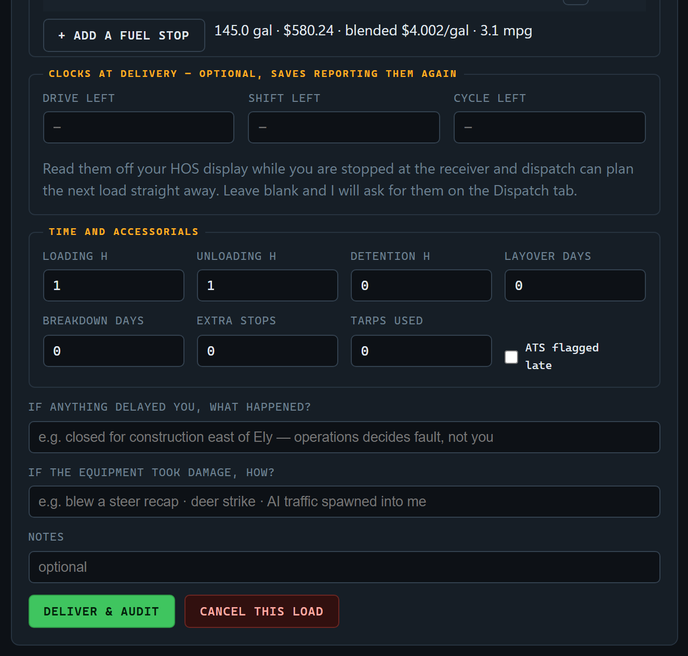
Optional, and worth doing. You are stopped at the receiver anyway — read the four numbers off your HOS display and enter them.
Do that and dispatch has everything it needs to plan the next load immediately. The audit will say "Clocks logged at delivery — I have what I need" instead of sending you back to your display. Leave them blank and you will be asked on the Dispatch tab as usual.
Loading, unloading and detention come from the Begin/End pairs you logged. The panel shows the clock times it used and what it made of them, and there is nothing to fill in.
Miss a pair and the boxes come back so you can enter it by hand — it degrades to the old behaviour rather than silently recording zero.
If anything delayed you, or the equipment took damage, say what happened. Operations reads these when deciding fault — see the next section. They are the single biggest influence on whether something lands on your record.
Closing a load reports where you are, your fuel, your damage and your odometer. All of it becomes your current status, and the Dispatch tab shows it back to you under a green banner with a Confirm — nothing changed button.
After a delivery, the only things you should ever need to type on the Dispatch tab are the ones that changed since you closed out — usually nothing, unless you drove somewhere or sat a rest.
Every closed load produces an audit, and it appears the moment you press Deliver & audit — as a popup you have to dismiss. It used to sit on the tab until the next dispatch was taken, by which point it was about the wrong trip and easy to miss entirely.
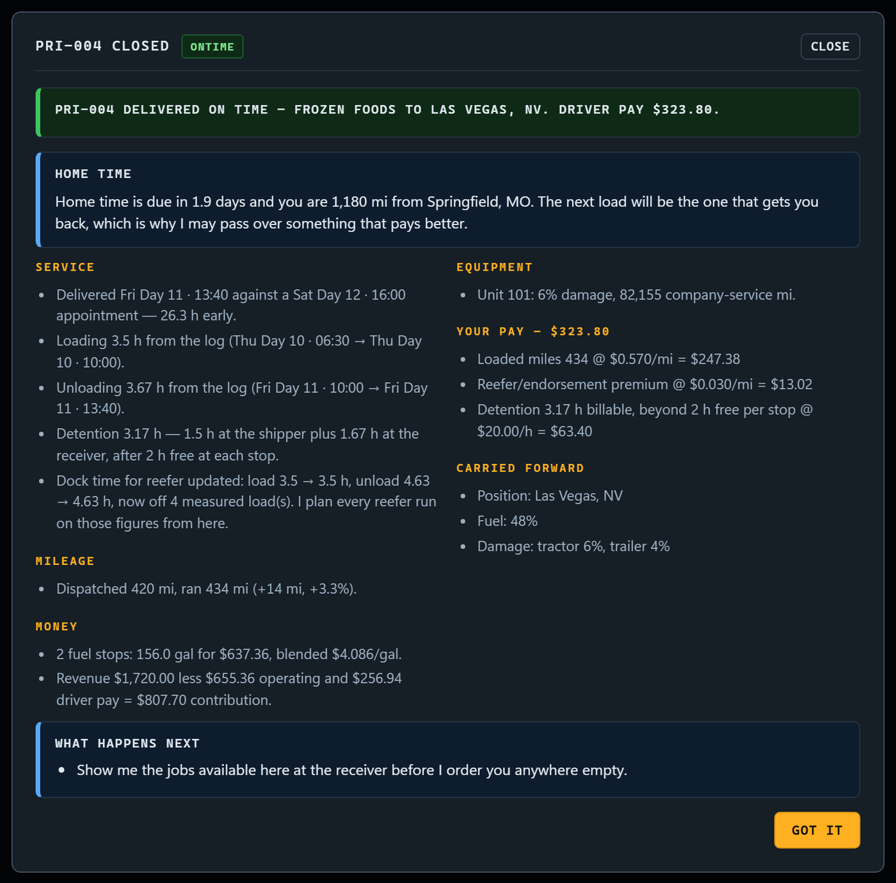
If the load ran late, the audit decides why — the difference between a note and a mark on your record.
You picked an arrangement when you signed on. It is the one promise the company makes to you, and the dispatcher routes for it rather than treating it as a note on a form.
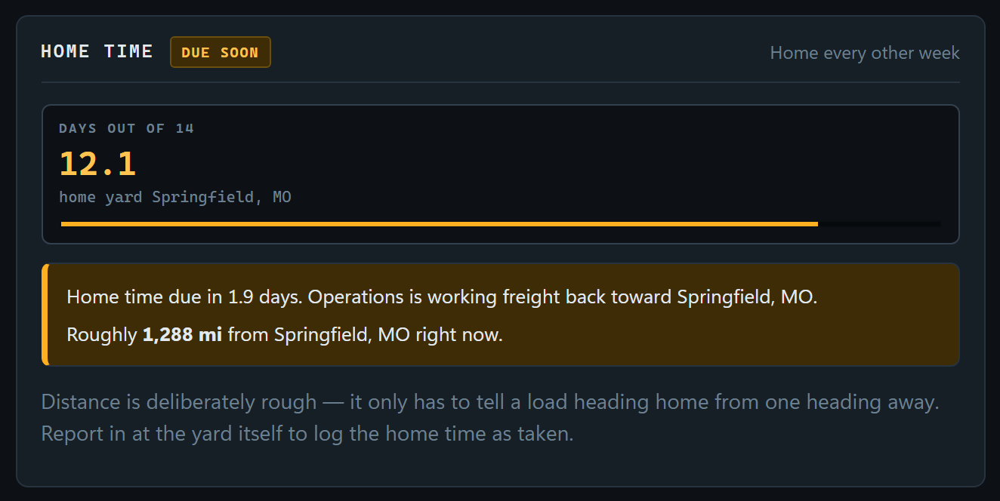
Home time is observed, not scheduled. Set your location to your home city with Where exactly → Terminal and the app records it as taken and resets the clock. It has to be your yard — a break at the Denver terminal when you are based out of Springfield is just a terminal stop. And a home time you were granted stays approved until you get there, rather than being spent eighty miles short.
| Arrangement | Days | What it means for your driving |
|---|---|---|
| Home every week | 7 | Weekend at the house. Regional freight, shorter runs, smaller settlements. |
| Home every other week | 14 | The common OTR arrangement. Two weeks out, a proper reset at home. |
| Home every three weeks | 21 | Longer runs and better mileage between resets. |
| Home about once a month | 30 | Long OTR. Most miles, most money, least time at the house. |
| Home every six weeks | 42 | Hard OTR. A lot of the map, not much of home. |
| No arrangement | — | Dispatch never routes you home. Run until you ask. |
Change it any time on the Career tab under Home-time arrangement. Switching to No arrangement turns the routing off entirely and the panel disappears.
The app has no true mileage table. ATS runs a scaled map and map mods change distances, so there is no honest way to compute real miles between two cities. What it uses instead is state-centroid distance with a same-state fallback — accurate enough to tell a load heading home from one heading away, which is the only question being asked.
Pay, fuel and feasibility all run off the miles you report from ATS. The rough geography only ever influences home-time ranking.
Home time starts and ends at your domicile, set on the Career tab. Asking to move is a request, not a setting: seniority, service record and whether the company wants a truck in that market all weigh on the answer. You may be approved, approved on condition of running some loads first, deferred, or refused. Asking again without anything having changed gets the same answer.
A full yard does not stop you. Every tractor the company owns takes a garage slot, yours included — but a domicile change is a swap rather than an addition. Your truck leaves the old yard at the same moment it needs a slot at the new one, so whatever is standing in your way moves into the space you are vacating: a spare first, and a driver only if there is no spare. Neither yard ends up over capacity, and the decision names who moved. Only if there is genuinely nothing there to shift are you told to upgrade the yard in ATS and ask again.
Report in at your home yard and the app hands you a brief. Arriving home is the one point in the loop where the truck is standing still at a company yard with nothing hooked to it, which makes it the moment for everything that cannot be done on the road.
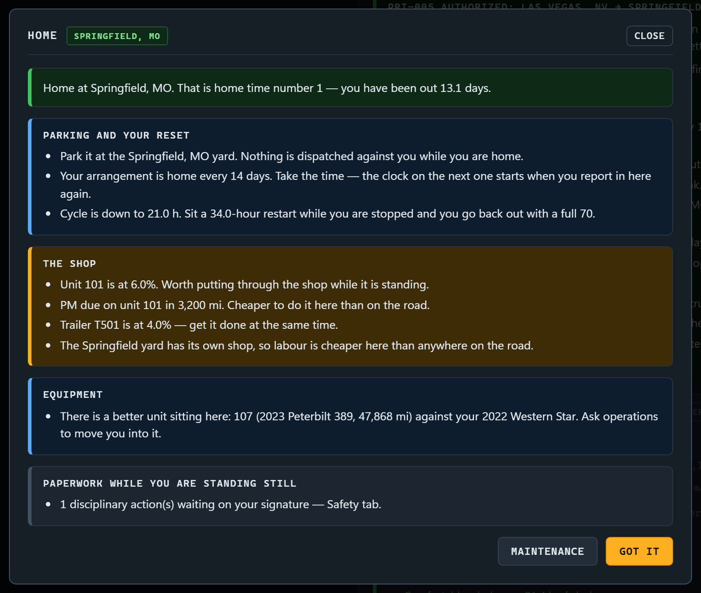
| It covers | Specifically |
|---|---|
| Parking | Where, how long you are entitled to, and whether a 34-hour restart is worth sitting while you are stopped anyway. |
| The shop | Which unit, at what damage, and whether it needs doing or can wait — plus whether the yard has its own shop or you need a dealer. |
| Equipment | A trailer reassignment waiting on you, a unit due for trade, or a better truck sitting on the property. |
| Paperwork | Open work orders, unacknowledged discipline, a fleet report coming due. |
If the equipment is inside every threshold and there is no paperwork outstanding, the brief says exactly that and tells you to take your days. It does not invent busywork to look useful.
Equipment lives in garages, exactly as ATS holds it. Each yard shows what it is holding against what it can hold, so you can set the app up to mirror your game.
A fuel, chemical, food-grade and pneumatic dry-bulk tanker are different trailers under different endorsements, and different purchases in ATS. Wherever the app names one it says which kind; where it does not know, it suggests what your carrier's freight implies and lists the alternatives. Set the subtype from the Fleet tab.
Every carrier has an equipment rating of one to five stars, and it is not decoration. A two-star fleet issues a 2017 Cascadia with 270,000 miles on it; a five-star fleet issues a 2023 VNL 860 with 26,000. Starting mileage follows the same banding, because a fleet that trades early has young trucks.
It applies to yards you stock yourself too, and your transmission preference is honoured at every tier: a better carrier means a better truck, not one you did not ask for.
| Tier | Tractors | Services |
|---|---|---|
| Small | 1 | Fuel, parking, trailer drop. No shop. |
| Medium | 3 | Adds a shop with a 20% labour discount. |
| Large | 5 | Full service: 35% labour discount, driver facilities. |
These mirror the ATS garage upgrades. Buy the upgrade in game, then re-tier the yard on the Terminals tab so the app agrees with your game.
Adding five tractors one spec form at a time is a chore. Fleet → Stock a yard does it in one step: the yard, how many, the transmission mix, and whether to add a matching trailer for each. It respects the tier — ask for more than the yard holds and it fills what it can and says so.
"Have you bought these in ATS?" Tick it only for equipment you actually own — that flag is what makes the app track damage against them. Unticked, they are backdrop until you buy them.
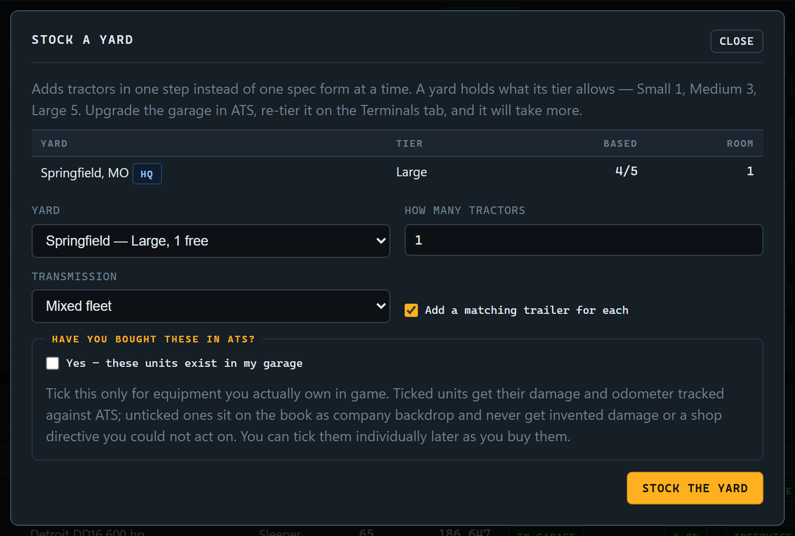
You cannot set damage in ATS, so a figure the app made up could never be reconciled against your game. Every unit starts at zero and only moves when you report a real reading. Units not in your garage never get damage, never get a shop directive, and never appear in maintenance alerts.
The game already deducts fuel, repairs, garages, trucks and hired-driver wages from it. Keeping a second, parallel pot of imaginary money would double-count everything, so the app reconciles to the one balance you report.
They will. You will buy something in game and forget to record it, or a repair will happen off the books. When the ledger and your reported balance disagree, use Finances → True up to game. It posts an explicit, labelled adjustment for the difference.
The adjustment is a visible ledger line with a memo, not a silent rewrite. You can always see what was corrected and when.
Open ATS, read the figure off, and type it into Company position on the Finances tab. There is a Clear beside it that puts the app back to treating it as unreported.
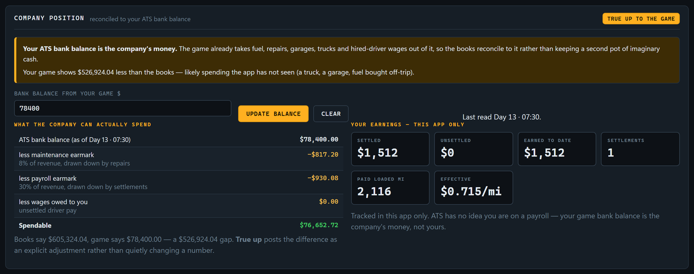
Until you have actually told the app what the game holds, it says so and reconciles nothing. It will not compare its own correct books against a number you never gave it and then report a mismatch — which is exactly what an earlier build did, and it was maddening.
Once reported, any gap between the books and the game is shown with a plain-English guess at the cause. Money in usually means a sale the app has not seen; money out usually means fuel, a garage or a truck bought off-trip.
True up posts the difference as an explicit adjustment entry. It never quietly rewrites a balance — the correction is a line in the ledger like everything else, with a memo saying what it was for.
If your game genuinely holds nothing, report it as zero and the app treats that as a fact and reconciles against it. Blank and zero are different states, and the app keeps them apart.
Log every fill and two things start paying you: driving the truck economically, and knowing where not to buy.
Enter each stop as you make it — where, how many gallons, and the price on the pump. You were already doing this for the cost model. Now it earns.
| Economy bonus | Your miles per gallon over the period against what your tractor is rated for, which is on the Fleet tab. Beat it and you are paid per loaded mile; beat it by a tenth and you get the full rate. The bar is fixed, so a good period is good however the last one went. |
|---|---|
| Buying bonus | Every gallon bought under the cheapest price available on that run is money saved, and you keep a share of it. Buy in Oklahoma rather than California and it shows up here. |
San Diego to Redding never leaves California. There is nowhere cheaper to buy, so you are not measured against Oklahoma prices for it — that would be marking you down for a routing dispatch chose. Each fill is compared to the best price on that run.
On a run that never left an expensive state, the settlement says so. What is still being judged is whether you found a good pump in the state you were sent to, which is the only choice that lane left you — and doing that well still pays.
Cross a cheap state and fill up in the dear one anyway and that is a decision. It gets named, with the run it happened on. Still never charged for.
Both are paid on the settlement, beside the on-time and safety bonuses, and for the same reason: a per-load bonus could be collected by settling after every single load.
Fuelling in California already cost you at the pump. The app naming it and then billing you again would be charging twice for one decision, so it does not. The stub says what a fill cost over the odds and says plainly that nothing was deducted.
The bonus is the whole signal. It floors at zero — a bad period earns nothing extra, it never takes anything away.
The Finance tab carries a price board, cheapest first, with what a gallon costs in every state and where that figure came from. Use it before you pick a load, not after.
Take a run into somewhere dearer than where you are standing and the trip card says so up front — how much more a gallon, and to fill before you cross if the tanks will take it. That is the only moment the information is any use.
Your pay accrues per load. It settles every Friday, and there is nothing to press.
ATS has no calendar, so the app defines one. That makes Fridays days 4, 11, 18, 25 and so on — the first week is a short one, every period after it is a full seven days. A settlement runs the moment you report a clock that has crossed a Friday, and you are told with a popup rather than a line in a log.
Jump the clock forward past several Fridays and each is settled in turn rather than lumped into one, so the bonus arithmetic stays per-period. A week with nothing delivered produces no stub at all, not an empty one.
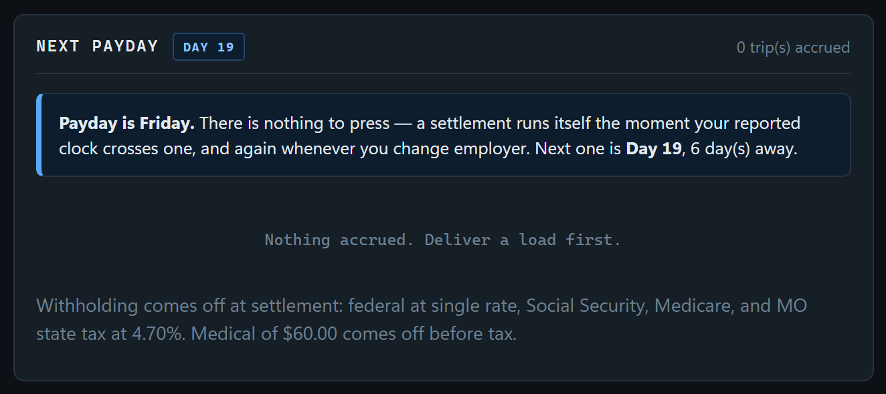
Changing employer settles the old one first. Accepting a job elsewhere closes out the unpaid wages at your current carrier before the move completes — you never leave money on a previous employer's books, and you do not have to remember to avoid it. That final stub, and every other, stays on your record after you move: it is your pay history, not the company's.
| Line | How it is earned |
|---|---|
| Linehaul · Deadhead | Loaded miles at your loaded rate; empty miles at the lower deadhead rate. |
| Division premium | Extra cents per mile for reefer, hazmat or oversize freight. |
| Accessorials | Detention beyond the free hours, layover, breakdown, extra stops, tarps. |
| On-time bonus | A retroactive per-mile kicker on a period with 100% on-time service. |
| Safety bonus | A flat amount for a clean period — see below. |
| Guarantee · Chargebacks | Tops you up to the weekly minimum once off probation. Chargebacks are rare — unauthorized modifications or clear abuse only. |
It scales with how much of a full pay period the settlement covered, and will not pay out on a very short one — otherwise settling daily would pay the flat bonus daily.
Every settlement carries one, reachable from the Payroll tab. Real drivers are paid net, and the gap between gross and net is most of what makes a paycheck feel like a paycheck.
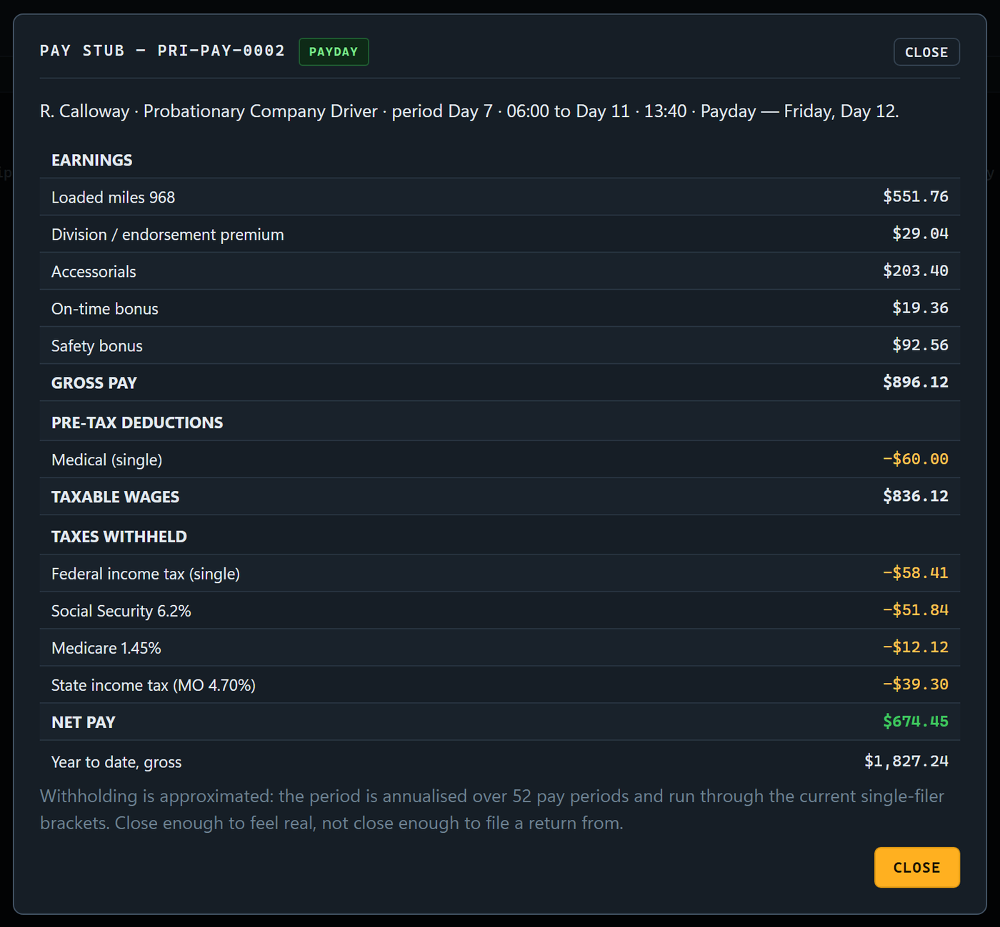
Your share of the premium, taken before tax — which is the point of it. $60 a period by default, editable in Settings.
Single filer. The period is annualised and run through the current brackets against the standard deduction.
Social Security at 6.2% up to the annual wage base, Medicare at 1.45% with no cap.
The state of your home terminal — so transferring changes it, which makes a move to a no-tax state a real consideration.
Alaska, Florida, Nevada, New Hampshire, South Dakota, Tennessee, Texas, Washington and Wyoming do not tax wages. Domiciled in one of those, the stub shows a zero line rather than no line — the absence is worth seeing.
Real withholding runs off a W-4, the IRS percentage method and a state's own tables. What is here is the shape of it — close enough to feel real, not close enough to file a return from. Settlements issued before pay stubs existed still render; they simply show gross.
Several things move the game clock: a status report, a close-out, a fuel stop logged against the trip, a loaded report. Any of them can cross a payday, and the settlement runs on whichever one it was.
The announcement no longer depends on which. A settlement is held as unread until something has actually put it in front of you, so a payday that landed on a fuel-stop log comes up on the next screen rather than being paid, banked and never mentioned.
A load delivered on a Friday settles on that Friday, not the next one — even though the unload event you logged that morning moved the clock across the payday before the trip was closed.
A year is 365 game days from the day your career started. It closes on the 365th, a W-2 is issued for it, and the year's counters start again at nothing.
Not a calendar year. The game counts days and the app has never pretended otherwise, so picking a January would mean inventing a date you have no way to check against ATS. Day 365 closes year one, day 730 closes year two, and so on for as long as the career runs.
Year-to-date on a pay stub used to mean career-to-date — every settlement ever issued, added up. That is a lifetime figure wearing a year's name, and it cannot answer the one question anybody in this job actually asks.
The Payroll tab now opens with the year you are in: gross, taxable wages, each withholding line, net, and what the year is running at annualised once there is a fortnight or so behind you. All of it resets on day 365.
Change carrier in the middle of a year and two W-2s turn up, one from each — which is exactly what happens to a real driver who does the same thing. Every settlement records who paid it, so the year end reports the wages to the carrier that actually paid them rather than to whoever you happen to work for when the year closes.
The Social Security wage base resets with the year and applies per employer, for the same reason.
The real form's boxes, in the real order: 1 wages, tips and other compensation — gross less the pre-tax medical; 2 federal income tax withheld; 3 and 4 Social Security wages and tax, box 3 stopping at the wage base; 5 and 6 Medicare wages and tax, box 5 uncapped, which is why the two can differ. Box 14 carries the section 125 medical that explains the gap between gross and box 1, and 15–17 give state wages and withholding, one line per state you were domiciled in during the year.
The withholding underneath it is the same approximation the pay stub uses, the form says so on its face, and the employer identification number is derived from the carrier code the way the DOT number already is. Nothing here is filed anywhere and nobody should file from it.
Work orders are raised automatically when damage crosses the mandatory-review or out-of-service threshold, and you can open one yourself any time.
Leave "the work has not been done yet" ticked and the order sits open. Any cost you enter is kept as a quote — nothing is posted to the books until the work is closed out, and the figure carries over to pre-fill the closing cost.
Untick it if the repair is already done and paid for, and it posts straight away.
Enter what it actually cost and the damage after. ATS repairs to 0%, so that is the default. Closing at zero asks you to confirm — otherwise a repair silently reads as free.
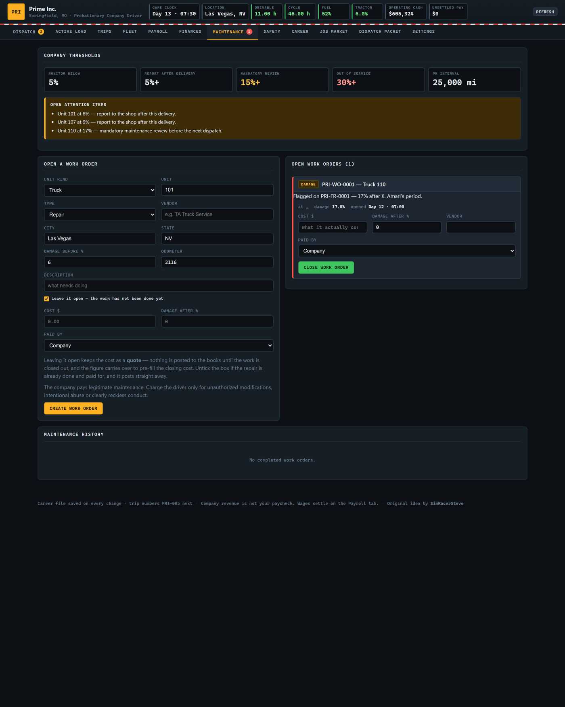
The company pays legitimate maintenance. A driver chargeback is reserved for unauthorized modifications, intentional abuse or clearly reckless conduct — not for ordinary wear, and not for damage caused by a load dispatch should never have booked.
Units you have not flagged as being in your ATS garage never appear in maintenance alerts. The app will not send you to a shop for a truck you cannot see.
The unit is a list of what is actually on the fleet, filtered by whether you chose Truck or Trailer, with each one's current damage beside it and your own marked. It is a list rather than a box because a unit number that matches nothing would post the cost and repair nothing.
Damage after % is the only place that reading is entered. Close the order and it goes onto the unit — and onto your status panel, if it is the one you are pulling. Repair trailer A1-5 to 1%, close it, and the trailer reads 1% with nothing else to type.
Ten per cent is a trip home. Fifteen is a stop. The difference is not how bad it is — it is how many more miles the company is willing to put on it.
Ten per cent is not catastrophic, and our own shop is cheaper than the first dealer you pass. But the one thing that makes it worse is more miles hunting a bay. So from 10% there is no fixing it on the road at any distance — it goes home.
From then on you are worked like a driver whose home time falls due today. Freight that heads home is fine and paid; freight that takes you further out is not, and the room narrows for every day the trip takes — one day out is one day overdue, the same arithmetic as a late home time.
It does not touch your home-time record. Being sent in to fix a truck is the company looking after its own equipment. It is not the company failing to get you home, and it will not read as a broken promise on your file. Your arrangement stands exactly where it was.
At 15% the calculation changes. If home is inside a day, go there. If it is not, the nearest shop gets it and nothing moves until it is fixed — past that line the company will not gamble another day's driving on it.
The Towed in? panel on the Maintenance tab takes it: where it stopped, where the wrecker took it, and the tractor damage as the game shows it afterwards. Leave the miles blank and the distance is measured between the two places for you. A towed truck is not running home at any damage level — it is already at the shop somebody else chose — and the app will stop offering to send it there.
The recovery is billed by distance: a hook fee plus the miles it was dragged, because twelve miles off a ramp and a hundred and forty out of the mountains are not the same job. The company pays it, and it goes on the claim if the unit does not come back.
Whether it is a repair or a write-off is still the damage reading's business. Being towed does not decide that.
If your career is on the GDC economy mod, the fleet can be held to GDC's own service interval guide instead of one blended PM figure. Settings → Maintenance.
| Checkpoint | Standard | Severe |
|---|---|---|
| Early tyre / alignment check | 15,000–30,000 | 15,000 |
| Engine service | 45,000 | 35,000 |
| Tyre / suspension / alignment | 60,000 | 45,000 |
| Chassis and cabin/body inspection | 100,000–150,000 | 100,000 |
| Transmission and driveline | 150,000 | 125,000 |
| Major suspension / ride-control review | 200,000 | 150,000 |
| Major engine / emissions review | 250,000–300,000 | 250,000 |
| Major powertrain inspection | 500,000 | 400,000 |
A range means it comes due at the low figure and is overrun past the high one. The three headed Major happen once when the odometer passes them; the rest come round again.
Use it when the trucks regularly work under real stress — repeated heavy haul, construction or forestry, rough access, frequent mountain running, high idle. A seasonal wear adjustment on its own does not put the fleet on the severe schedule; it changes how fast condition develops, which is a different thing.
The yard services the units it can reach — a hired driver's truck goes through at the fleet report. Yours it cannot: you drive it to a shop in ATS and pay for the work there. Recording it is the app's half, and it is a work order of type Preventive. Close one against your unit and every checkpoint that was due is marked done, with the ones covered written onto the order.
The type is the whole thing. A Repair order for the same work posts the money and leaves every checkpoint due — which looks exactly like the app having ignored you. The service schedule panel has a Record this service button that opens the form already set to Preventive, on the right unit, with the work named, and the panel quotes what the yard reckons the set is worth so you can weigh the shop's figure against it. When you get home the yard brief says the same thing.
Incidents are opened automatically for late deliveries, damage spikes of ten points or more, and anything you record by hand. Each carries a fault attribution and a severity.
Filing an incident does not hand you a form to choose your own punishment. Safety works out where you are on the ladder, issues the action, states the corrective action, and you acknowledge it.
The ladder advances on driver-fault preventable incidents only. Dispatcher errors, mechanical failures, unavoidable delays and game limitations are all recorded — the company wants the history — but none of them touch your standing.
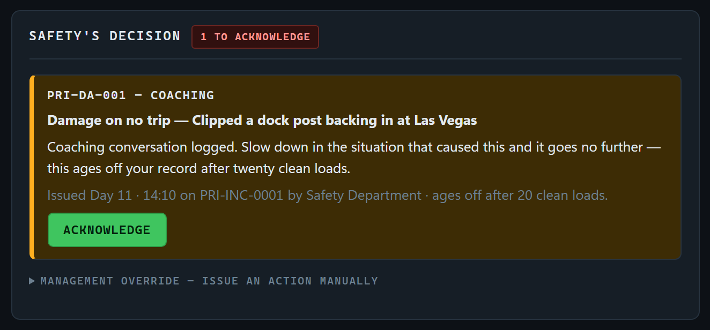
A suspended driver cannot be dispatched until Safety clears them, and the Dispatch tab will refuse to evaluate a board. Termination closes the career file — though your record follows you, and you can start again at another carrier with the history attached.
Fault attribution can be overridden on review. If the app called something driver-fault and there is more to it, record the real cause — the app says as much in its own wording: "If there is more to it, tell me and I will re-attribute it."
There is also a management override on the Safety tab for issuing an action by hand. It is folded away, confirmed, and logged as an override — because you are playing the safety manager as well as the driver, and overruling your own process should leave a mark.
You start on probation. Clearing it takes loads, miles, on-time service, low average damage, a clean fault record and three good reviews in a row — the numbers are only half of it. The targets are on the Career tab.
Nothing to click. Once the numbers and the reviews are both there, operations clears you at your next report-in and tells you the new rank and rate. A driver does not sign off their own probation.
The ladder carries on — company, senior, lead, then Specialist Driver for the awkward freight and Master Driver at the top. Every rung is earned on performance and applied by itself; none of them is an offer waiting for you to accept.
Pay comes from rank, a carrier change, or a second-chance scale. There is no box to type one into.
Loads, miles, on-time percentage and fault incidents at every previous carrier stay on your file. That is what opens the door at a better one.
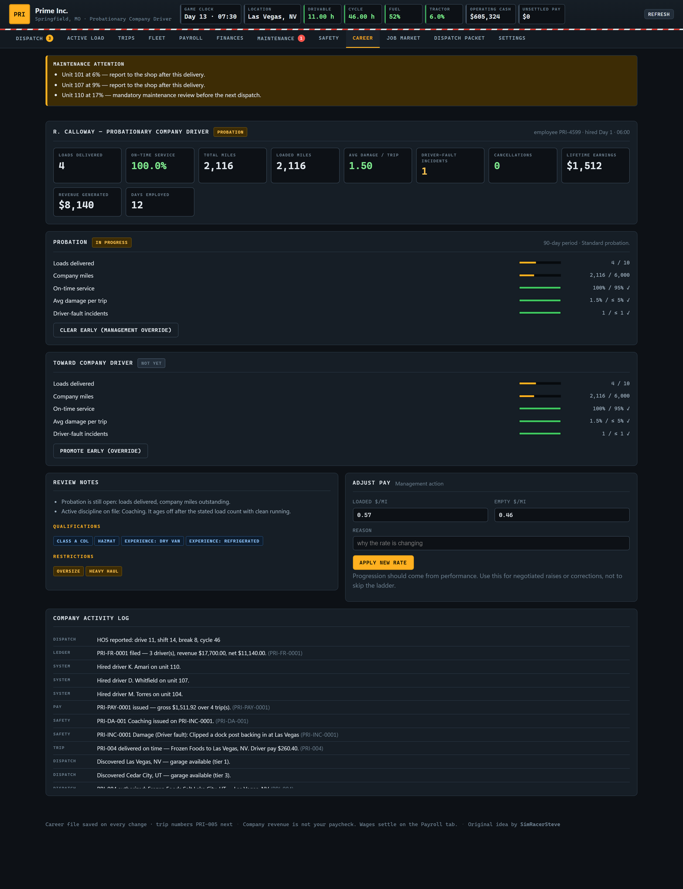
Resign and apply elsewhere from the carrier market. Specialised fleets — tankers, heavy haul, car haul, agricultural — pay better and demand more: years behind the wheel, endorsements, and a clean record. A greenhorn will be turned down, which is the point of the progression.
You are credited with what you declared on the application plus the days you have actually served — 365 of them is a year, and that is the only thing that makes years. The market shows the gap in days, because days are what close it.
Loads do not buy years. They satisfy a carrier's minimum loads requirement, which is a separate gate about verifiable history, and they are what proves the time was worked — but running hard does not make more of it. A fleet wanting five years wants five years.
Carriers also have business conditions that shift over time. One having a bad quarter may not be hiring at all, however good your record — check the card before you resign from a job you have.
Once you own more trucks than you can drive, hire AI drivers in ATS and record them here. They run your units out of your yards and generate revenue you never see happen.
Every fifteen game days the app asks for their numbers. You read them off the ATS company screen and file a fleet report.
For a driver you are not sitting next to, ATS gives you four figures: level, rating (0.0–10.0), $/mile and $/day. Those are what the report asks for, and what operations judges on.
For their equipment it gives a star rating — five down to one — plus an odometer on the tractor. Trailers carry no odometer at all.
What it does not give is a damage percentage for any unit you are not driving. Earlier builds asked for one anyway, which meant making a number up and then having the app raise work orders off it. Nothing asks for that now. Your own tractor still uses a percentage, because you can see the repair screen.
Each driver has a wage share — the fraction of the revenue they generate that goes to their pay. Their level, rating and every period's figures accumulate on their record, so a trend is visible: a driver climbing steadily is worth keeping through a slow fortnight, one sliding for three periods is a different conversation.
A bad earning period puts a driver on probation, not on the termination list. The app names the figure that failed, gives yours and the fleet average, and states the number they have to beat by the next report. Improve and they come off it, and the report says so. Come in no better and then a termination is recommended — with the documented warning attached, which is a far better case than one weak fortnight.
Level is context, not a verdict. A level 2 driver earning less than a level 9 is new, not failing, so the bar scales down for someone still developing.
A hired driver needs a truck, and that truck needs a slot at a yard. Small yards hold one. This is the real constraint on growing a fleet, and it is the same constraint the game imposes.
One line per driver, and one for you. Most of it is copied straight off the ATS company screen; the arithmetic is the app's problem, not yours.
| Column | What to put in it |
|---|---|
| Level, Rating | Off the company screen, as shown. |
| $/mi, $/day | Also off the company screen. $/day is the one that matters — it is what the app judges a driver on. |
| Truck ★ | Condition in stars. There is no damage percentage for a unit somebody else is driving. |
| Odometer | The tractor's reading in game. This is where the mileage comes from — see below. |
| Trailer | Every trailer in the fleet, with whoever currently has it named beside it. Pick one and they are on it from now on — including one somebody else has, which then comes off that driver. See below. — none — is a real answer: AI drivers bobtail between loads. |
| Trailer ★ | Condition, and that is all a trailer needs. See below. |
| Due back | Optional. Only if your company screen actually says when they are back with the trailer. |
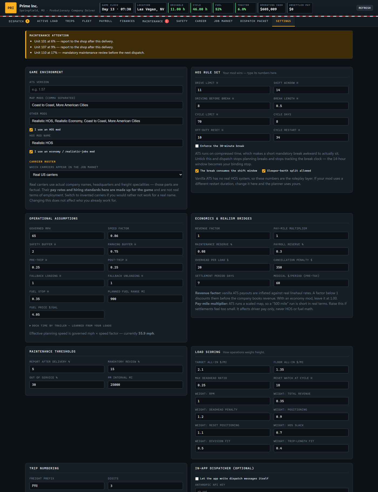
Everything the app assumes is editable: the HOS rule set, buffers, speed factor, fuel price and economy, maintenance thresholds, scoring weights, trip numbering, settlement period and the fleet-report interval.
Record your HOS mod, economy mod and map mods. The map mods matter most — they add cities the market table does not know, and the app will tell you when it cannot judge a destination.
Settings → Data will snapshot the career, download the file, list and restore backups, or start over. Every save writes atomically and rotates a backup first.
The API key, HOS rules, mod list and cost assumptions describe your game and your machine, not the career that just ended — so a reset leaves them alone. A second prompt offers factory defaults if that is genuinely what you want.
The build number is top-right of the header and in the footer; Settings → Data also names the build that last wrote your career file. This manual covers v0.38 alpha.
Replace TruckSimDispatcher.exe in the folder you are already using and leave the
data folder alone. Newer builds migrate older career files forward on load.
If you move the exe somewhere new, it looks for an existing career before opening a blank one:
TSD_DATA_DIR if set, then beside the exe, then
%LOCALAPPDATA%\TruckSimDispatcher\data. A career found in any of those beats an empty
folder, and the console prints which file it opened.
Any career it finds elsewhere on the machine is listed under Settings → Data → List backups with a button to load it — so an update never silently looks like a lost save.
| What you are seeing | What is going on |
|---|---|
| Every load is rejected as unprofitable | Your break-even is too high for a scaled map. Finances → Cost model → Calibrate. Overhead per load is usually the culprit — try $20 rather than a real-world figure. |
| A load says "not clear to run" | A hard block: no truck or trailer assigned, equipment past the 10% dispatch-stop line, a suspended driver, or an open mandatory-review work order. The banner lists exactly which, and a shop order says how long the repair takes. |
| Dispatch keeps picking a lower-paying load | Check the scoring detail. Usually home time coming due, a reset watch, or a destination that reloads badly. Every term is itemised. |
| "I cannot tell whether it moves you toward home" | The destination's state is not in the geography table — usually a map-mod city. Home time simply does not score that load. |
| A city never offers freight in game | It is not truly discovered. Revealing cities with an editor does not count; you have to drive there. See Section 14. |
| Damage alerts for trucks you do not own | Units are flagged as being in your ATS garage when they are not. Untick the flag, or use Fleet → trim. |
| Ledger disagrees with your game balance | Finances → True up to game. It posts a visible adjustment rather than rewriting history. |
| Repairs recorded as free | A work order was closed with the cost left at zero. Reopen the record — the closing dialog now asks you to confirm a zero cost. |
| The app opened a blank career | It is reading a different data folder. The console prints the path on startup; Settings → Data → List backups will show any career found elsewhere, with a button to load it. |
| The exe will not start at all | Policy on some managed machines blocks unsigned executables. Run from source instead: install the .NET 10 SDK, then dotnet run in the project folder. |
If something is wrong that is not in this table, it is probably a bug rather than a misunderstanding on your part. Take a snapshot from Settings → Data before experimenting, and report it.
SimRacerSteve on Discord.
The company-driver roleplay this app automates is his: the hours-of-service discipline, the dispatcher who confirms feasibility before committing the truck and owns it when a bad call runs late, the separation of company revenue from the driver's paycheck, and the refusal to invent numbers to make a story work.
Every rule in Section 1 came from that. The app is an implementation of someone else's good idea.
US city coordinates come from kelvins/US-Cities-Database (MIT, Copyright © 2017 Kelvin S. do Prado), derived from US Census place data. About 29,700 cities ship with the app so distances are measured rather than guessed — which matters with a map mod like Coast to Coast, where the board names cities the app's own market table has never heard of.
Distances are great-circle plus a road factor, not routed mileage, and land within roughly a fifth of real road miles. Good enough to answer "is this taking me toward home" and "is that yard worth deadheading to". Pay, fuel and feasibility always run off the miles ATS reports.
Not affiliated with or endorsed by SCS Software. American Truck Simulator is their work.
The carriers in the job market are real companies, used because it is more fun to drive for a fleet you have seen on the road. Their headquarters and the freight they run are broadly accurate; the pay, standards and hiring behaviour are roleplay values chosen to make progression interesting and are not real employment terms. Nothing here represents any of those companies.
Hours-of-service rules follow the US FMCSA pattern — 11 and 14 hour limits, a 30-minute break, 70 hours in 8 days, a 10-hour reset and a 34-hour restart. They are modelled for a game. Do not use this software to plan real driving.
Everything stays on your machine. No telemetry, no accounts, no network calls — unless you set an API key for reading screenshots, which is off by default and clearly marked where it is not.
Not ready for release. Play-testing feedback is the point of it existing in your hands at all — if something reads wrong, feels wrong or breaks, that is worth saying.
Built with Claude Code.
Idea by SimRacerSteve.